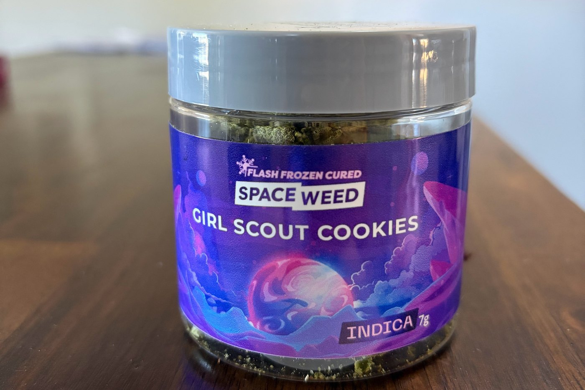

Blog
How should flower be kept once it is dry?
Sealed, cool and dark. Warmth and light are what change dried flower over time, and whole flower holds up better than ground. A closed jar in a cool, dark place is what the studies point to. Aroma still fades with time, so sooner is better than later.

Warmth
A study in Frontiers in Plant Science kept flower in the dark for a year at four temperatures, from room temperature down to a deep freeze.
At 25 °C, the THCA in a THC-type flower fell by about a third over the year. Whole flower kept at 4 °C, the temperature of a refrigerator, came through best of everything tested.
Colder was not better. For the aroma compounds, the freezer did worse than the refrigerator, and ground flower did worse than whole. Aroma was also the first thing to go under every condition, which is why time counts as well as temperature.
Light
A four-year study of seized hashish and marijuana kept samples in the light and in the dark, at room temperature and colder. At room temperature almost all of the THC was gone by the end, and light changed how it broke down.
The container
A 2024 study kept dried flower for six months in three kinds of container: a glass bottle, an open tray and a plastic box. The glass kept the aroma compounds best.
What it means for Space Weed
Keep the jar closed, keep it somewhere cool and dark, and leave the flower whole until it is needed.